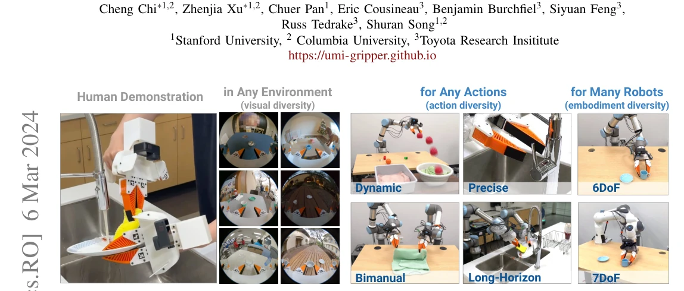
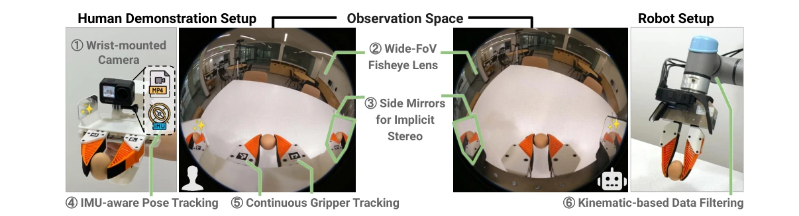
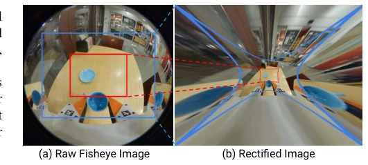
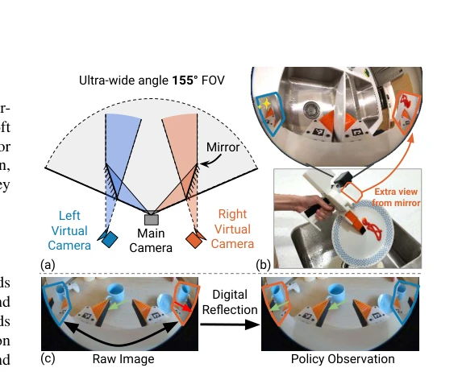
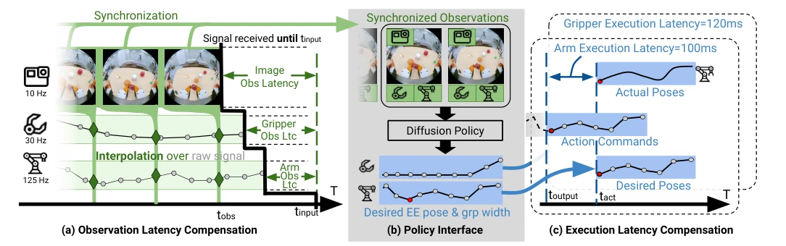
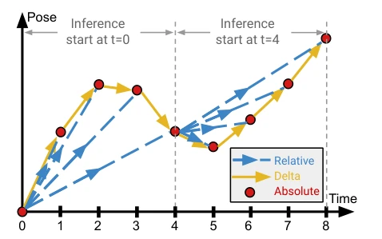
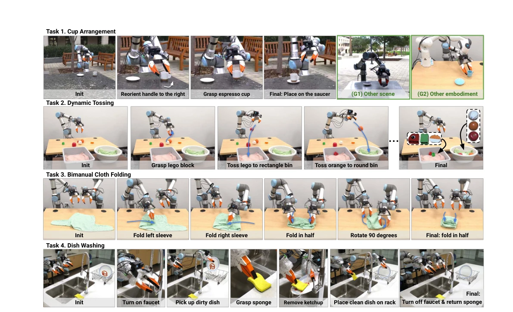
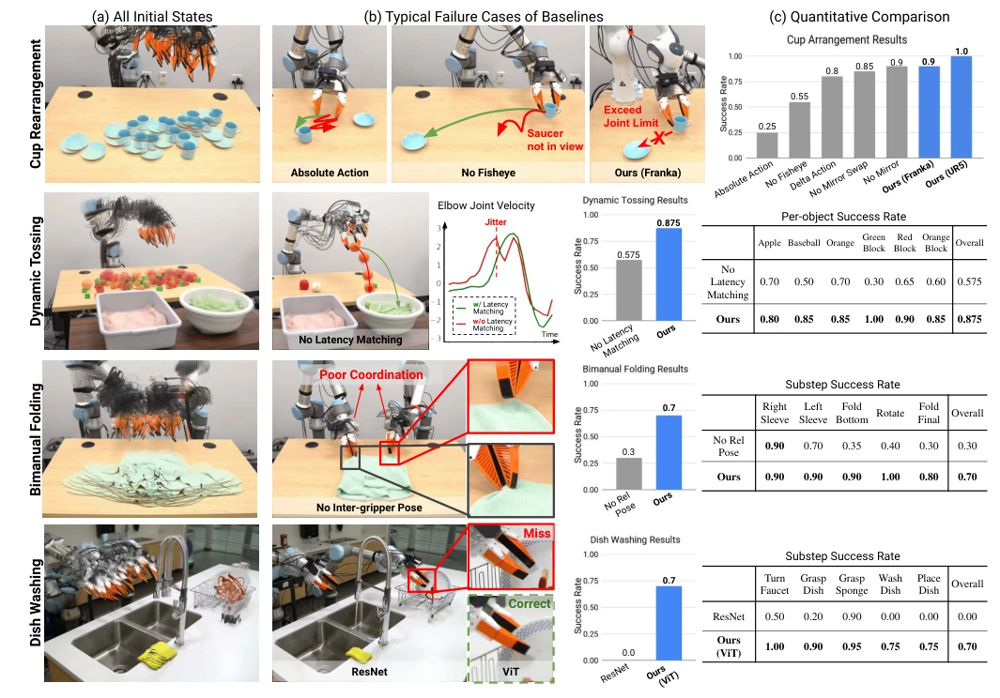
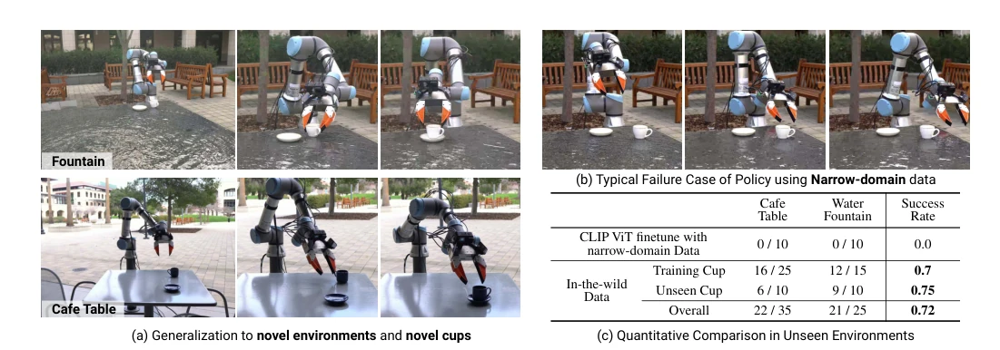
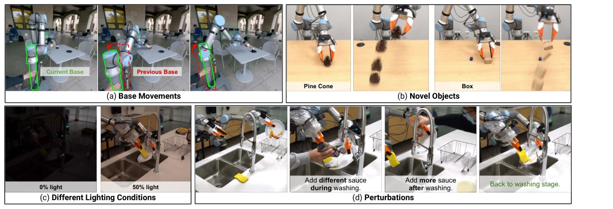

Universal Manipulation Interface: In-The-Wild Robot Teaching Without In-The-Wild Robots
Cheng Chi, Zhenjia Xu, Chuer Pan, Eric Cousineau, B. Burchfiel, Siyuan Feng abspdf
论文点评Review
这篇论文试图用“手持夹爪 + GoPro”解决机器人数据收集的痛点，口号喊得响——“野外教学无需野外机器人”。确实，把昂贵的机械臂换成手持设备，成本骤降，还能在咖啡馆、厨房随便录。但“通用”二字略显夸张，毕竟机器人端还得装同款相机和夹爪，不然观察空间对不上，这算不算“换汤不换药”？不过，他们用鱼眼镜头加侧镜解决单目深度问题，用相对轨迹消除坐标依赖，这些工程巧思值得点赞。最大的槽点可能是：虽然号称零样本泛化，但本质上还是行为克隆，遇到训练分布外的极端情况估计还是得歇菜。不过，70% 的野外泛化成功率在 BC 领域确实算卷王了，至少比那些只能捡瓶子的系统强多了。
This paper attempts to address the pain points of robot data collection using a "handheld gripper + GoPro" setup, with a bold slogan: "Wild teaching requires no wild robots." Indeed, replacing expensive manipulators with handheld devices drastically reduces costs and allows recording in casual settings like cafes or kitchens. However, the term "general" appears slightly exaggerated, as the robot end still requires the same camera and gripper to align the observation space; does this not amount to "changing the soup but not the medicine"? Nevertheless, their engineering ingenuity in using fisheye lenses combined with side mirrors to solve monocular depth issues, and employing relative trajectories to eliminate coordinate dependence, deserves praise. The most significant drawback may be: although claiming zero-shot generalization, it is essentially behavior cloning, and it is estimated to still fail when encountering extreme situations outside the training distribution. However, a 70% wild generalization success rate is indeed top-tier in the Behavior Cloning (BC) field, far superior to systems that can only pick up bottles.
The data bottleneck in robot imitation learning has long been a recurring issue. Traditional teleoperation relies on real robots, incurring high costs and making it difficult to access "wild" environments [9, 54]. Conversely, learning from human videos faces a significant "embodiment gap," characterized by missing action information and poor transferability [1, 2]. Recently emerged sensorized handheld grippers [41, 50, 36] lower the barrier but often only capture static grasps, lacking dynamic action diversity; moreover, the global action accuracy recovered by monocular SfM is insufficient, hindering policy deployment. UMI aims to fill this gap by designing a low-cost physical interface to enable direct, high-fidelity transfer from human demonstrations to robot policies, particularly for complex tasks involving dynamics and bimanual collaboration.

Fig. 1: Universal Manipulation Interface (UMI) is a portable, intuitive, low-cost data collection and policy learning framework. This framework allows us to transfer diverse human demonstrations to effective visuomotor policies. We showcase the framework for tasks that would be difficult with traditional teleoperation, such as dynamic, precise, bimanual and long-horizon tasks.

Fig. 2: UMI Demonstration Interface Design. Left: Hand-held grippers for data collection, with a GoPro as the only sensor and recording device. Middle: Image from the GoPro’s 155° Fisheye view. Note the physical side mirrors highlighted in green which provide implicit stereo information. Right: UMI-compatible robot gripper and camera setup make observation similar to hand-held gripper view.
The UMI framework consists of two parts: data collection and policy learning. On the collection side, the handheld gripper is equipped solely with a GoPro camera, utilizing a 155° fisheye lens to expand the field of view [HD2], and physical mirrors are added on both sides to simulate binocular stereo vision [HD3]. Combined with the GoPro's built-in IMU data, robust visual-inertial SLAM tracking is achieved via ORB-SLAM3 [HD4]. The gripper width is continuously tracked via markers [HD5], rather than simple opening and closing. On the policy side, the core lies in eliminating hardware differences. First, by measuring delays across sensors, inference-time latency matching of observations and actions is performed [PD1] to resolve time desynchronization between training and execution. Second, Relative Trajectory is adopted as the action representation [PD2], where action sequences represent transformations relative to the current end-effector pose rather than absolute coordinates; this renders the policy insensitive to the robot base position, achieving hardware independence. Finally, Diffusion Policy [9] is employed to model multi-modal action distributions, complemented by CLIP pre-trained visual encoders to process complex visual inputs.

Fig. 3: Fisheye vs Rectilinear (a) UMI policies use raw Fisheye image as observation. (b) Rectifying a large 155° FoV image to the pin-hole model severely stretches the peripheral view (outside of blue line), while compresses the most important information at the center to a small area (inside of red line).

Fig. 4: UMI Side Mirrors. The ultra-wide-angle camera coupled with strategically positioned mirrors, facilitates implicit stereo depth estimation. (a): The view through each mirror effectively creates two virtual cameras, whose poses are reflected along the mirror planes with respect to the main camera. (b): Ketchup on the plate, occluded from the main camera view, is visible inside the right mirror, proving that mirrors simulate cameras with different optical centers. (c): We digitally reflect the content inside mirrors for policy observation. Note the orientation of the cup handle becomes consistent across all 3 views after reflection.

Fig. 5: UMI Policy Interface Design. (b) UMI policy takes in a sequence of synchronized observations (RGB image, relative EE pose, and gripper width) and outputs a sequence of desired relative EE pose and gripper width as action. (a) We synchronize different observation streams with physically measured latencies. (c) We send action commands ahead of time to compensate for robots’ execution latency.

Fig. 6: Relative Trajectory as Action Representation. Relative trajectory, used by UMI, is a sequence of end-effector (EE) poses relative to the same current EE pose for each inference step. In contrast, Delta action represents each action step relative to its immediate previous action, therefore accumulates error. Absolute action requires a global coordinate frame for all actions, which is difficult to define for in-the-wild data collection.
The authors evaluated UMI on four real-world tasks: cup placement, dynamic throwing, bimanual folding, and dishwashing. In the cup placement task, UMI achieved a 70% success rate in unseen environments, whereas the baseline trained solely on narrow-domain data achieved 0% [Fig. 9]. The dynamic throwing task demonstrated the system's capability to capture rapid motion, achieving a success rate of 87.5%. Ablation studies indicate that fisheye lenses, side mirror reflections, latency matching, and relative trajectory representation are all critical for performance. For instance, removing latency matching caused the throwing success rate to drop to 57.5% [Fig. 8]. Furthermore, 1,400 demonstration trajectories were collected across 30 distinct wild locations, demonstrating the critical role of data diversity in generalization.

Fig. 7: Policy Rollouts. We test UMI on a variety of challenging real-world tasks. Cup arrangement tests UMI’s ability to learn both prehensile and non-prehensile actions, and to capture multi-modal action distribution (clockwise and counter-clockwise rotation). This task is evaluated in both narrow-domain and unseen environments as well as two robot embodiments. Dynamic tossing tests UMI’s ability to capture and transfer rapid human motions as well as precise hand-eye coordination. Bimanual cloth folding tests UMI’s ability to synchronize two-arm coordination. Dish washing tests UMI’s ability to handle long-horizon tasks that involve multiple rigid, deformable, and articulated objects. Please check videos on our website for more details.

Fig. 8: Narrow-domain Evaluation Results. (a) Initial states for all evaluation episodes overlayed together. For each task, all methods start with the same set of initial states, matched manually with reference images. (b) Typical failure mode of the baseline/ablation policy. The red arrow indicates failure behavior, green arrow indicates desired behavior. (c) Success rate over 20 evaluation episodes, best performance for each column are bolded. Please check our website for more comparison videos.

Fig. 9: In-the-wild Cup Arrangement Evaluation. (a) The policy, trained with in-the-wild data, demonstrates strong generalization capability to novel environments and novel objects. (b) With only narrow-domain data, the policy struggles to generalize to new environments. (c) Comprehensive qualitative results are provided, and additional comparison videos can be found on our website.

Fig. 10: Robustness Test. We test the policy robustness with different inference time perturbations such as moving robot base, novel objects, different lighting conditions, and adding different and more condiments for the dish-washing task. The learned policy is robust against these perturbations and completes the task. Please check the video on our website for more details.